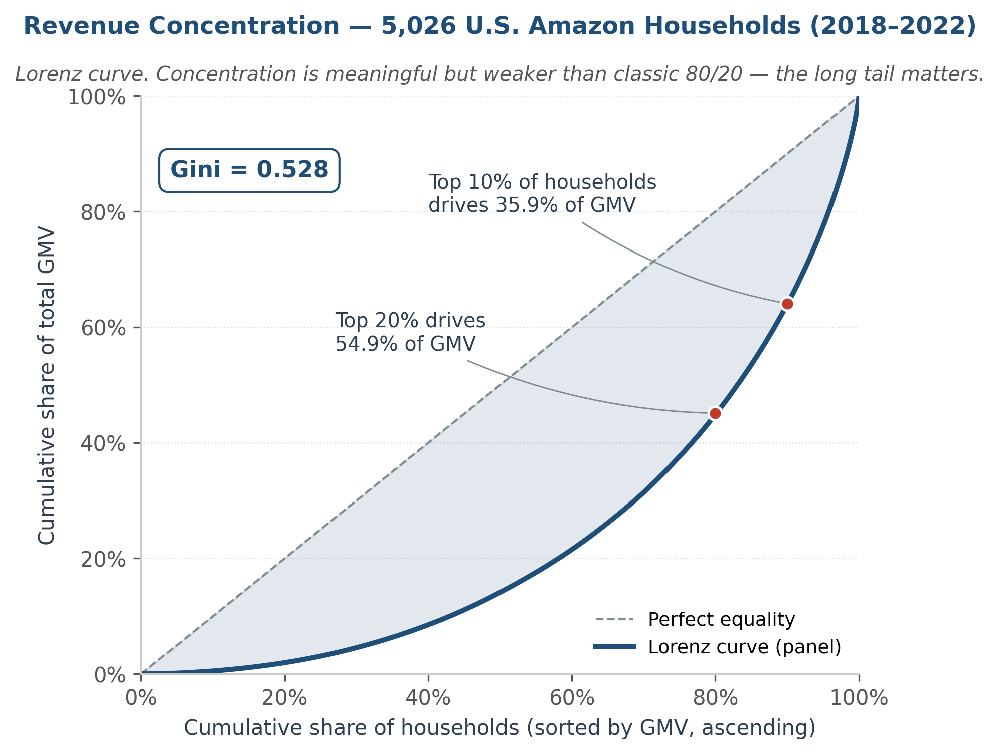

SQL · DuckDB · Python · scikit-learn · Tableau
Amazon Revenue Analytics
Where does revenue concentrate, what’s at risk next quarter, and where should the category budget go? A four-layer BI framework over 5,026 U.S. Amazon households, 2018–2022 — about 1.85M transactions.
- Top 10% of households drive 35.9% of GMV (Gini 0.528) — and the gap is ~95% purchase frequency, not basket size.
- Mid-spend deciles 6–9 hold 64% of revenue-at-risk on just 14% of GMV — retention budgets usually aim at the wrong tier.
- Every headline number ships with a bootstrap 95% CI; every aggregate is cross-checked byte-for-byte between SQL and Python.